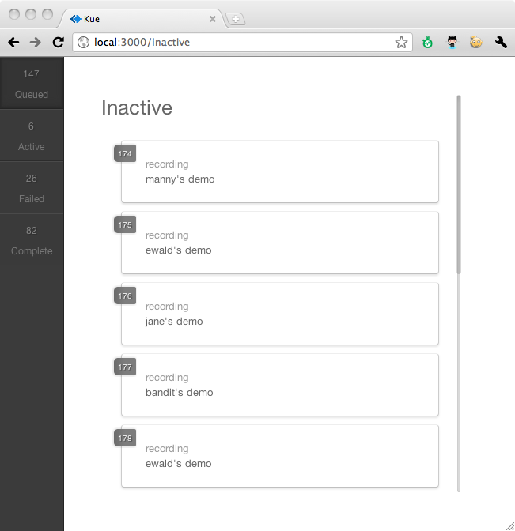
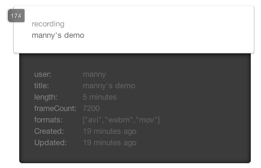
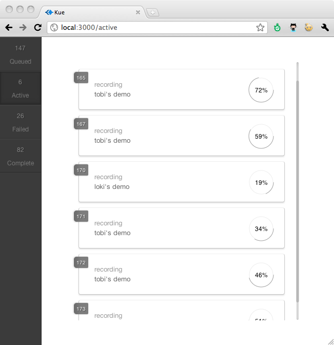
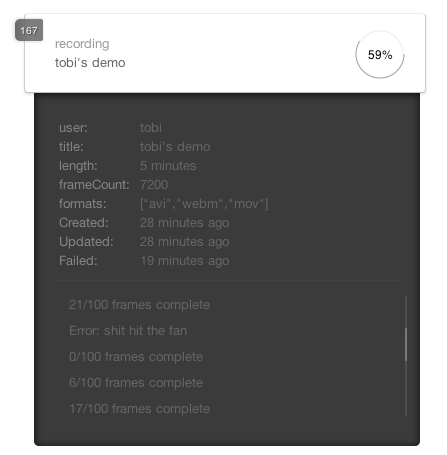
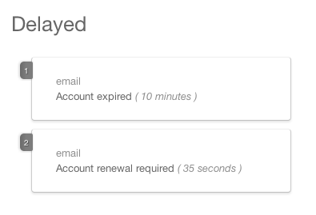

Kue
-
Kue is a feature rich priority job queue for node.js backed by redis. A key feature of Kue is its clean user-interface for viewing and managing queued, active, failed, and completed jobs.
 -
At any point in the job's life-time you can view verbose details, including the job's arbitrary data, creation, update, failure, and completion times.
 -
Jobs may incrementally update their progress, providing vital feedback for long-running tasks.
 -
Job-specific logging allows you to see how your job's are progressing, or any hiccups they may encounter.
 -
With Kue you can schedule jobs to run at any time in the future, a simple yet powerful feature, showing you in real-time when the job will be scheduled.
 -
With the UI's action panel you can filter jobs by type and alter sorting at any time.